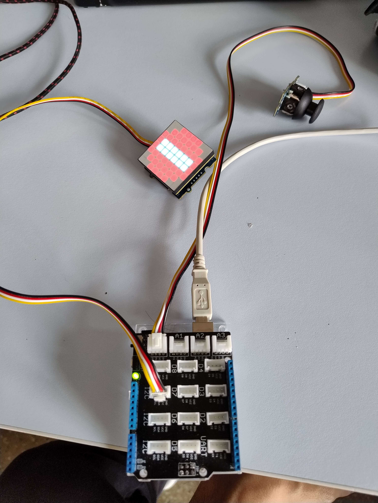
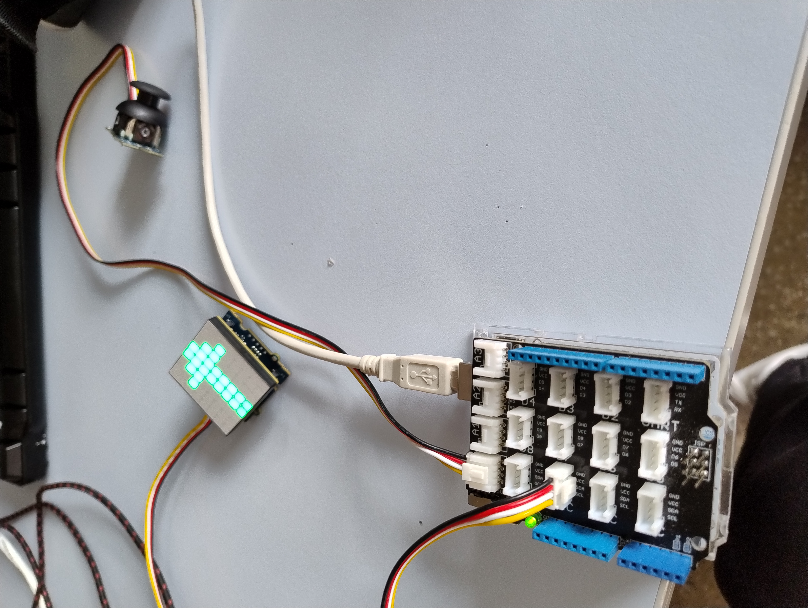

le but était de créer et programmer un petit panneau LED et un joystick pour permettre à un cycliste ou une trotinette électrique de signaler ses intentions telles que tourner, avancer, s'arrèter.
Projet signalisation
×

STOP

Flèche directionnelle
Autres projets personnelles
Jeux vidéos créés sur scratch au collège pour les cours et pour m'occuper.
Modélisation de carte sur Unreal Engine 5 et mouvements basiques du joueur.